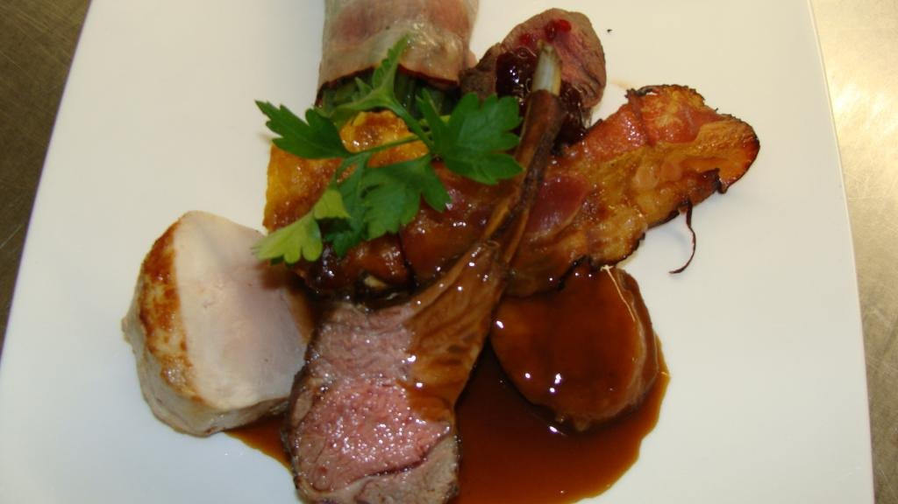
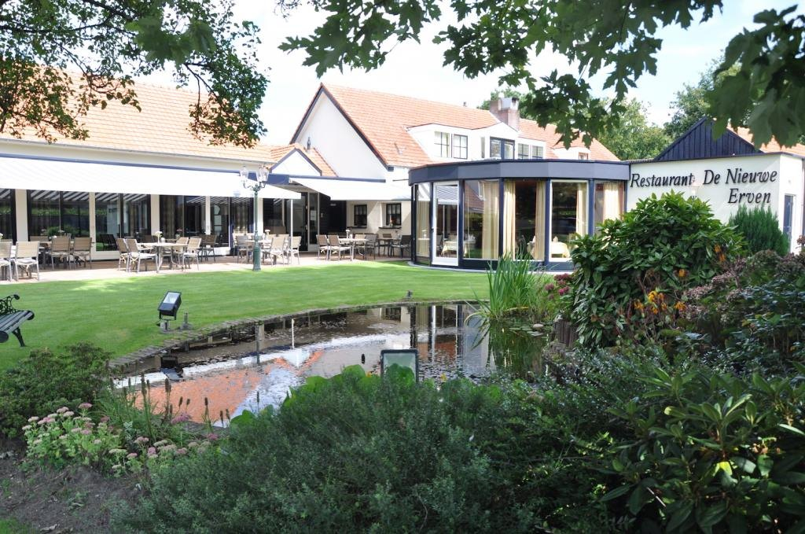
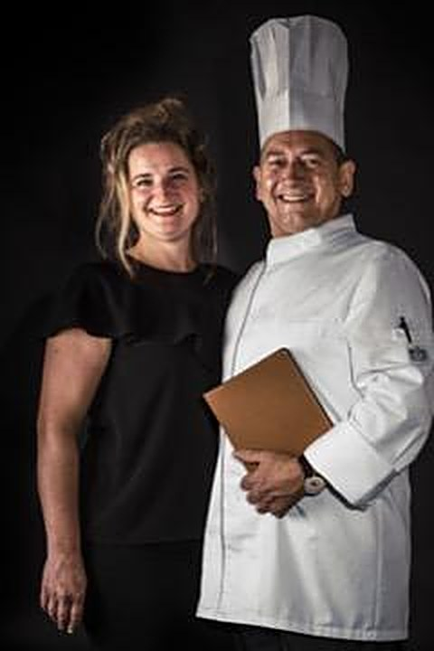
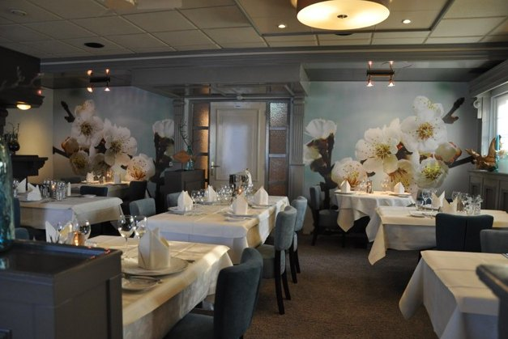
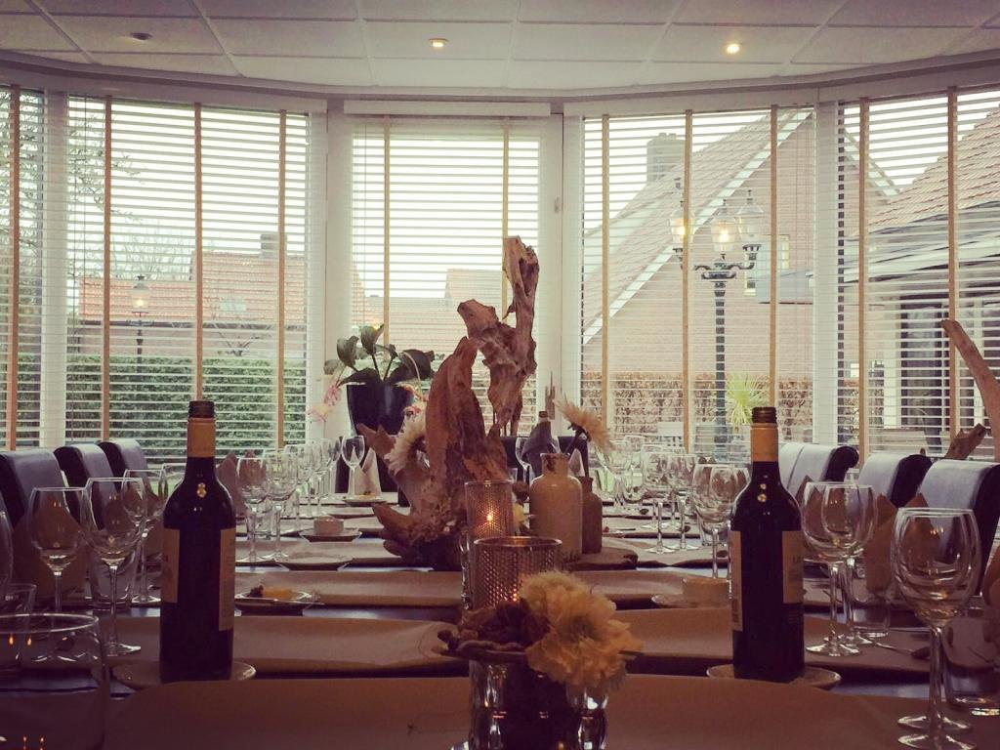
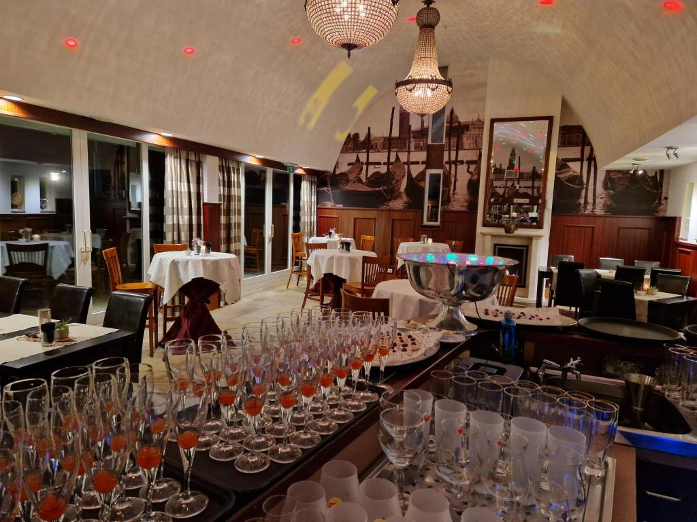
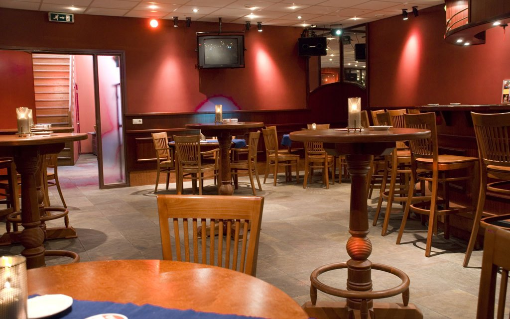
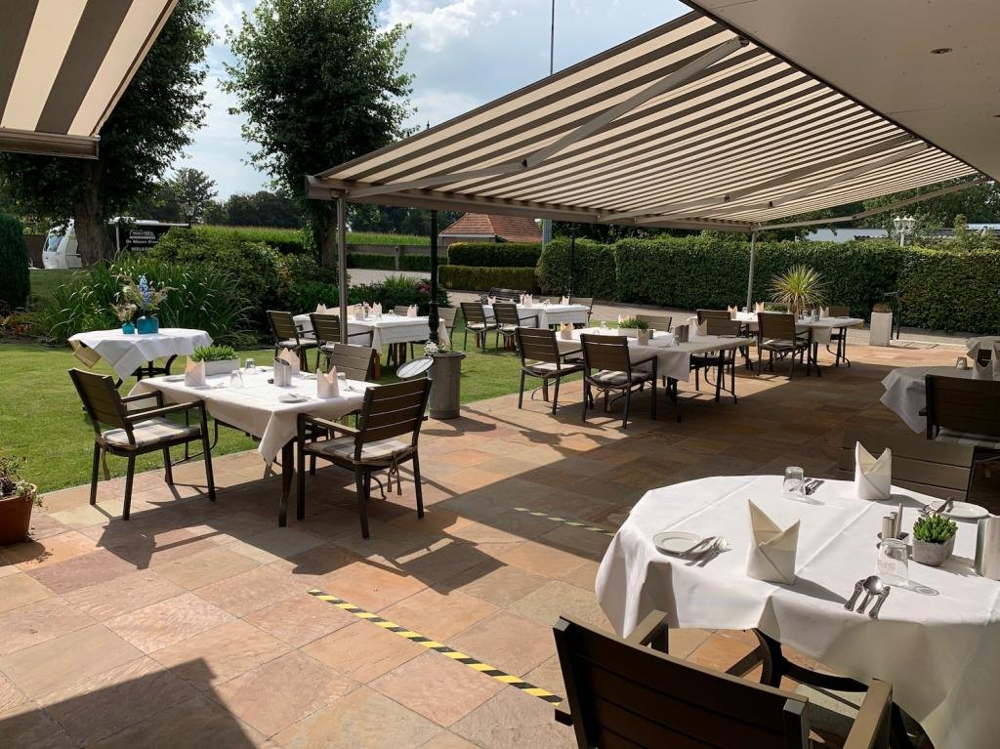

Nieuwe Erven menu
Ons vaste keuzemenu van vijf gangen, ook met drankenarrangement.
€ 55 p.p.Bekijk menu

Sinds 1988 aan de Mierdseweg in Reusel, het restaurant waar de gastheer zelf kookt. Voor een diner met z'n tweeën, een avond met familie of uw feest tot 80 personen.
Een greep uit onze kaart. Alle hoofdgerechten serveren we met garnituren van seizoensgroenten.
Dieetwensen? Meld het gerust bij het reserveren.

Onze boerderij aan de Mierdseweg werd meer dan 100 jaar geleden gebouwd door de grootvader van de familie. De naam komt van rond 1700, toen hier bos en heide werden ontgonnen tot nieuwe erven.
Vier jaar verbouwen later, op 14 juli 1988, ging het restaurant open. In de keuken koken we volgens de klassieke Franse keuken, met plateservice aan tafel. Flamberen doen we op verzoek, en heeft u een dieet, dan past de chef het aan: hij is ook gediplomeerd dieetkok.
"Wij staan voor u klaar sinds 1988."
Annemiek & Toon KokxEen romantisch diner, een vergadering of een groot familiefeest: in onze boerderij is voor alles plek.





"Echt een restaurant waar nog alles zelf bereid wordt met de beste ingrediënten en passie. En wat een warm onthaal, bediening en sfeer."
Toine · eet.nu"Wij hebben gisteren een super gezellige avond gehad met ons team. Het eten was heerlijk en goed verzorgd en de service was geweldig. Voor herhaling vatbaar!"
Team SW · eet.nu"Met een gezelschap zaten we in de serre te genieten van het 25 jaar jubileum menu. Zelden zo lekker gegeten."
J. van Riel · eet.nuBel of app ons, of vul het formulier in. U krijgt altijd bericht van ons terug.